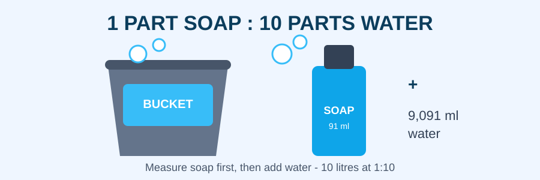

What a dilution ratio means
A ratio written as 1:10 means 1 part soap to 10 parts water. The finished mix has 11 parts in total. So the soap is 1 divided by 11 of the total volume, and the water is 10 divided by 11.
Formula: Soap (ml) = Total mix (ml) ÷ (1 + water parts). Water (ml) = Total mix (ml) − Soap (ml).
Always check your product label first. Some soaps are made to be used neat in a foam cannon bottle, some are pre-diluted, and some give a different ratio for a bucket and for a foam cannon. The label wins over any general table.
Calculator
Example result: For 10,000 ml at 1:10, use about 909 ml of soap and 9,091 ml of water.
Worked examples
| Mix size | Ratio | Soap | Water | Typical use |
|---|---|---|---|---|
| 1 litre (1,000 ml) | 1:10 | 91 ml | 909 ml | Foam cannon bottle, small mix |
| 5 litres (5,000 ml) | 1:10 | 455 ml | 4,545 ml | Half bucket |
| 10 litres (10,000 ml) | 1:10 | 909 ml | 9,091 ml | Full wash bucket |
| 10 litres (10,000 ml) | 1:20 | 476 ml | 9,524 ml | Light maintenance wash |
| 1 litre (1,000 ml) | 1:100 | 10 ml | 990 ml | Concentrated soap, spray bottle |
| 5 litres (5,000 ml) | 1:256 | 19 ml | 4,981 ml | Concentrated soap, bucket |
Worked check for the 10-litre, 1:10 example: 10,000 ÷ 11 = 909.1 ml of soap. Water is 10,000 − 909 = 9,091 ml. For the 1:256 example: 5,000 ÷ 257 = 19.5 ml, rounded to 19 ml.
Quick dilution table
| Ratio | Soap per 1 litre | Soap per 5 litres | Soap per 10 litres |
|---|---|---|---|
| 1:5 | 167 ml | 833 ml | 1,667 ml |
| 1:10 | 91 ml | 455 ml | 909 ml |
| 1:20 | 48 ml | 238 ml | 476 ml |
| 1:50 | 20 ml | 98 ml | 196 ml |
| 1:100 | 10 ml | 50 ml | 99 ml |
How to use the mix
- Rinse the car first to remove loose dirt and grit.
- Measure the soap with a measuring cup or the cap, using the calculator result. Do not guess from the bottle.
- Add soap to the bucket or foam cannon bottle first, then add water. Stir or shake gently to mix.
- Wash in the shade if you can, one panel at a time, from the roof down. Keep the surface wet.
- Rinse each section before the soap dries, then rinse the whole car and dry with a clean microfiber towel.
- Rinse buckets, mitts and bottles after use, and store soap as the label directs.
Common mistakes to avoid
| Mistake | Why it matters | Do this instead |
|---|---|---|
| Using far too much soap | Leaves residue, is hard to rinse and wastes product | Measure to the label ratio |
| Washing in hot sun | Soap and water dry on paint and can leave spots | Wash in shade or on a cool panel |
| Using one dirty bucket | Grit is carried back onto paint | Use a rinse bucket, or rinse the mitt often |
| Letting soap dry | Can leave marks that need extra rinsing | Work panel by panel and keep surfaces wet |
For more car care guides and product advice, see Car Care Guy at carcareguy.com.